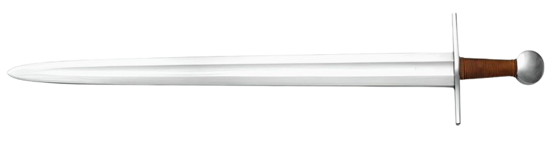
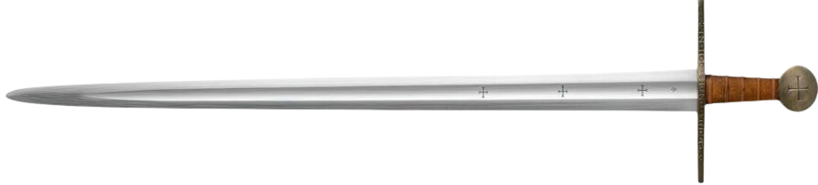
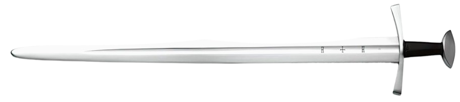
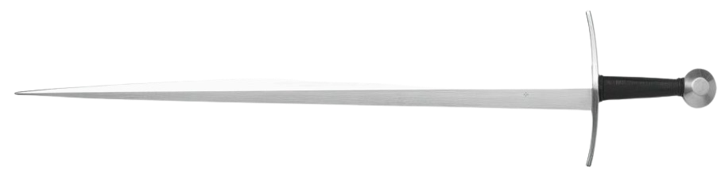
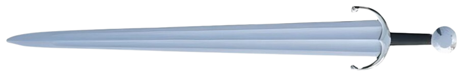

Sword Timeline


9th to 12th Century
Type X Arming Sword
Type X is the earliest type of arming sword, inspired by the Viking sword.

13th Century
Type XI Arming Sword
Type XI arming swords are some of the most popular early knightly swords.

12th to 14th Century
Type XII Arming Sword
Type XII was one of the first cut-and-thrust one-handed medieval weapons, created to adapt to armor improvement.

14th to 16th Century
Sword Suitable for Grappling
They could be used with shields, as with previous models, but were also suitable for grappling.

16th Century
Renaissance-Inspired Arming Sword
It incorporated features of earlier arming sword types with Renaissance elements such as a blade that tapered toward the tip, a broad base, and multiple fullers.